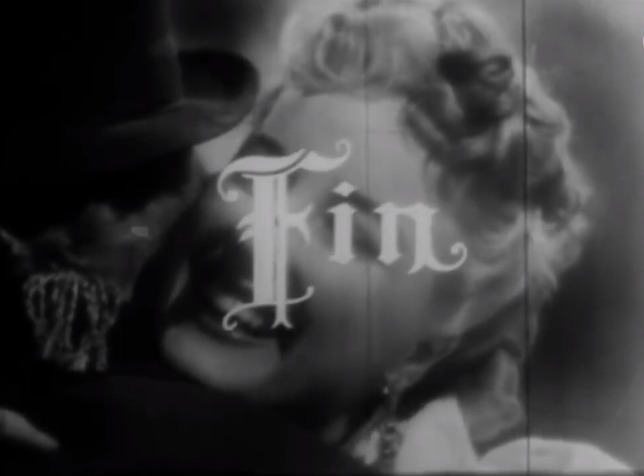

Durante la Época de Oro del Cine Argentino, muchas actrices se hicieron famosas por su belleza y talento. Estas son algunas de las actrices más notables de esa época:
Estas actrices fueron conocidas por sus actuaciones en películas que hoy son consideradas clásicos del cine argentino. También fueron íconos de la moda e íconos culturales de su época.
